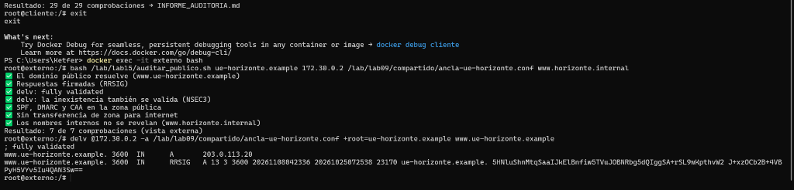
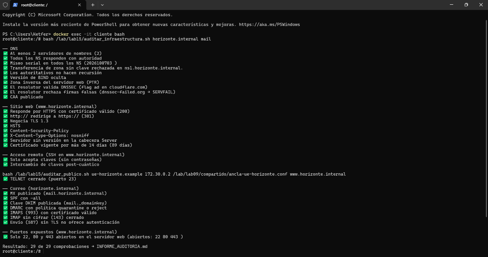

DNS Moderno e Infraestructura Web Segura: Colegio Bautista Boliviano Brasileño
Arquitectura híbrida de nombres (BIND 9 con Split-Horizon, TSIG, DNSSEC, DoT y RPZ), servicios web HTTPS, SSH endurecido, correo criptográfico, operación segura y plan de adopción real.
- Ketfer Gianella Salazar (Coordinación General & Seguridad)
- Charles Yourdan Conde (Infraestructura DNS BIND9 & Vistas)
- Brian Calás (Resolutor Unbound, DoT & RPZ)
- Marco Barriga (Servidor Web Nginx, TLS 1.3 & SSH)
- Adaniel Balderrama Orellana (Servidor de Correo Postfix/Dovecot & Restic)
- Docente Evaluador: M.Sc. Ing. Jimmy Nataniel Requena Llorentty
- GitHub:
Grupo-Kali-Linuxxxx/Proyecto-Final-DNS-Moderno-CBBB
- Criterio 1 (9 pts): BIND 9 primario/secundario TSIG con vistas, DNSControl, procedimiento de cambios y plan Anycast.
- Criterio 2 (9 pts): DNSSEC validado con delv, DoT en puerto 853, RPZ escolar y servicio investigado (DNS-01 ACME + nsupdate).
- Criterio 3 (12 pts): UFW perimetral, GoAccess, respaldos Restic con restauración probada, manual de operación, DRP y plan de adopción real.
- Meta: 30 de 30 puntos (Nivel de Dominio Estratégico).
Radiografía DNS en Vivo del Dominio cbautistabb.edu.bo
Auditoría no invasiva mediante consultas DNS públicas sobre los servidores autoritativos del colegio.
| Parámetro | Estado en Producción | Diagnóstico y Riesgo |
|---|---|---|
| DMARC | ❌ INEXISTENTE | Cualquiera puede enviar correos falsos haciéndose pasar por el Director o Secretaría (*phishing*). |
| SPF | ⚠️ ~all (Sin Google) | Usa Google Workspace pero el registro no lo incluye; correos de profesores caen en spam. |
| DNSSEC | ❌ NO FIRMADO | Sin registros DS en .bo; expuesto a envenenamiento de caché (*DNS Cache Poisoning*). |
| CAA | ❌ INEXISTENTE | Cualquier autoridad certificadora puede emitir certificados para el colegio. |
| PTR (rDNS) | host.nemabol.net | Desalineado; no coincide con el FQDN del colegio (*FCrDNS roto*). |
- Aislamiento Total: Crear zona interna
cbbb.internalinvisible para internet. - Blindaje Criptográfico: DNSSEC con
delv fully validatedy DMARCp=quarantine. - Privacidad Escolar: Resolutor Unbound con DNS sobre TLS (853) y filtrado RPZ.
- Ahorro Real: 82% de reducción de costos usando software libre empresarial.
Topología de Red Desacoplada y Flujos de Comunicación
Modelo de 7 nodos distribuidos entre la subred interna del campus y el internet simulado.
| Nodo | IP Interna | Rol y Servicios |
|---|---|---|
| ns1 | 10.10.10.2 / 172.30.0.2 | DNS Primario BIND 9 con Vistas Split-Horizon y DNSSEC. |
| ns2 | 10.10.10.3 | DNS Secundario BIND 9 con réplica TSIG y NOTIFY. |
| resolutor | 10.10.10.4 | Unbound DoT puerto 853 y filtrado escolar RPZ. |
| servidor-web | 10.10.10.20 | Nginx HTTPS TLS 1.3, PHP-FPM, SSH Ed25519, UFW, Restic. |
| 10.10.10.25 | Postfix MTA, Dovecot IMAPS 993, Submission 587, OpenDKIM. | |
| cliente | 10.10.10.50 | Estación interna de auditoría TI del colegio. |
| externo | 172.30.0.100 | Cliente externo para auditar la vista pública y delv. |
Matriz de las 5 Decisiones Técnicas Clave
Justificaciones técnicas de seguridad, rendimiento y soberanía digital para el colegio.
Las estaciones internas resuelven cbbb.internal a IPs locales sin gastar internet. Para internet, la zona privada devuelve REFUSED, blindando la red interna contra reconocimiento de atacantes.
Desacopla la autoridad de la recursión. Valida DNSSEC en memoria, cifra consultas externas con DoT (853) contra espionaje del ISP y bloquea apuestas y malware con listas RPZ.
Los dominios .internal no son emitidos por Let's Encrypt. La CA propia emite certificados X.509 de 2048 bits para web y correo con $0 de costo, sin alertas en navegadores.
El puerto 25 se reserva a MTAs. El 587 exige TLS y SASL obligatorio. La regla reject_sender_login_mismatch impide que un usuario envíe correos haciéndose pasar por el Director (error 553).
Deduplicación por bloques y cifrado en origen con AES-256-GCM. Un respaldo robado es ilegible sin la clave. Temporizadores systemd garantizan ejecución nocturna y restauración probada en < 25 min.
Control de cambios declarativo en dnsconfig.js con ciclo check → preview → push, eliminando errores humanos de edición manual en zonas públicas.
BIND 9 con Vistas Split-Horizon, Replicación TSIG y DNSSEC
Autoridad primaria y secundaria con sincronización segura y firmado criptográfico automático.

- Vistas Divididas: Directiva
match-clientssepara tráfico interno de externo. Nombres.internaldevuelvenREFUSEDdesde afuera. - Replicación TSIG: Transferencias AXFR hacia
ns2protegidas con HMAC-SHA256 (`transferencia.key`). Intentos sin clave rechazados. - DNSSEC Automático: Política
dnssec-policy standardcon firmado dinámico de registros y pruebas de inexistencia conNSEC3. - Ocultación de Versión:
version noneen named.conf impide que escáneres detecten la versión de BIND.
Resolutor Recursivo Unbound: DoT (Puerto 853) y Filtrado RPZ
Protección contra espionaje del proveedor (ISP) y filtrado perimetral para las salas de cómputo.
Demostrado con tcpdump: Ninguna consulta recursiva hacia internet viaja en texto plano por el puerto 53 UDP. Todo el tráfico escolar sale cifrado con TLS hacia la nube.
Si un alumno en los laboratorios intenta acceder a un sitio de juegos o estafas, Unbound responde inmediatamente con NXDOMAIN sin consultar internet.
Procedimiento Formal de Cambios y Plan de Migración Anycast
Gestión profesional de zonas DNS con Git y transición hacia una arquitectura de alta disponibilidad.
- Serial Estándar YYYYMMDDnn: Ejemplo
2026102601. Garantiza que el secundario identifique cualquier cambio y replique de inmediato. - Política de TTL Escalonado:
• Previo a migraciones: Reducción a 300 segundos (5 min) con 48h de anticipación.
• En operación estable: 86400 segundos (24 horas) para máxima eficiencia de caché. - Flujo Git con Pull Request: Validación sintáctica con
named-checkzoneantes del merge en la rama principal.
| Fase | Objetivo Clave | Plazo |
|---|---|---|
| 1. Auditoría | Inventario de registros y cuenta Anycast (Cloudflare/Route53). | Semana 1 |
| 2. Enlace TSIG | BIND9 local como Hidden Master con clave HMAC-SHA256. | Semana 2 |
| 3. DNSControl | Programación declarativa en dnsconfig.js y preview. | Semana 3 |
| 4. Corte NIC Bolivia | Cambio de servidores NS delegados en nic.bo sin cortes. | Semana 4 |
| 5. DNSSEC Cloud | Carga de registro DS y validación global < 10 ms. | Semana 5 |
Servicio Investigado: Certificados DNS-01 y Actualizaciones con nsupdate
Integración avanzada de los estándares IETF RFC 8555 (ACME) y RFC 2136 (Dynamic DNS).
- Cero Puertos Web Expuestos: No requiere abrir el puerto TCP 80 hacia internet para renovar certificados SSL.
- Soporte para Servidores Internos: Permite emitir certificados públicos válidos para servidores en IPs privadas (10.10.10.x).
- Certificados Comodín (*Wildcard*): Emisión de
*.cbautistabb.edu.boprotegiendo portal, correo y notas con una sola clave.
nsupdate TSIGServidor Web Nginx HTTPS y Acceso Remoto SSH Blindado
Cifrado estricto en tránsito, cabeceras modernas de seguridad y protección activa contra intrusiones.
- Redirección Obligatoria: Puerto 80 redirige con código
301 Moved Permanentlya HTTPS. - Cifrado Moderno: Protocolo TLS 1.3 exclusivo con suite
TLS_AES_256_GCM_SHA384. - Cabeceras de Blindaje:
Strict-Transport-Security(HSTS 1 año),Content-Security-Policy(CSP) yX-Content-Type-Options: nosniff. - Ocultación de Banner: Servidor responde sin versión (`Server: webserver`).
- Solo Claves Criptográficas: Contraseñas desactivadas (`PasswordAuthentication no`); acceso directo a root bloqueado (`PermitRootLogin no`).
- Criptografía Post-Cuántica: Intercambio híbrido `sntrup761x25519-sha512@openssh.com` y claves asimétricas Ed25519.
- Jaula SFTP: `/srv/cbbb` con propiedad estricta `root:root (755)` forzada con `internal-sftp`.
- Fail2ban Activo: Monitoreo de journald y bloqueo automático de ataques de fuerza bruta en `nftables`.
Correo Institucional Seguro: Postfix, Dovecot IMAPS y Tríada DNS
Solución definitiva a la vulnerabilidad de spoofing detectada en el diagnóstico inicial del colegio.
- Almacenamiento Maildir: Estructura jerárquica con permisos 0700 por usuario.
- Puerto 143 Cerrado: Listener en claro clausurado (`port = 0`). Conexión obligatoria por IMAPS 993 con TLS implícito.
- Submission 587 Autenticado: STARTTLS y SASL forzados (`smtpd_tls_auth_only = yes`).
- Anti-Spoofing PCRE: Directiva `reject_sender_login_mismatch` bloquea el envío de correos suplantando al Director con código 553 5.7.1.
| Registro | Configuración Aplicada | Efecto de Seguridad |
|---|---|---|
| SPF | v=spf1 mx -all | Rechazo duro; prohíbe envíos desde cualquier IP ajena. |
| DKIM | RSA 2048-bit (OpenDKIM) | Firma digital de cabeceras y hash de cuerpo (bh=). |
| DMARC | p=quarantine; adkim=s; aspf=s | Alineación estricta; manda a cuarentena correos falsificados. |
✔ Envíos recibidos con cabeceras certificadas: dkim=pass, spf=pass y dmarc=pass.
Operación Segura, Restic y Plan de Adopción Real para el CBBB
Presupuesto en el mercado cruceño, matriz de riesgos de infraestructura y plan de 45 días.
| Rubro (Hardware + Software) | Solución FOSS | Solución Propietaria |
|---|---|---|
| Servidor Dell PowerEdge 1U | $us 1,850.00 | $us 1,850.00 |
| Licencia Windows Server + 68 CALs | $us 0.00 | $us 4,420.00 |
| DNS Appliance Infoblox | $us 0.00 | $us 1,500.00 |
| Google Workspace Enterprise (Año) | $us 0.00 | $us 4,896.00 |
| Veeam Backup Licencias | $us 0.00 (Restic) | $us 1,200.00 |
| UPS Online 1500VA + Dominio .edu.bo | $us 500.00 | $us 500.00 |
| INVERSIÓN TOTAL AÑO 1 | $us 2,600.00 | $us 14,366.00 |
- Cortes de Energía en 3er Anillo: Mitigados con UPS Online 1500VA de doble conversión con apagado ordenado automático (NUT).
- Firewall UFW: nmap desde afuera confirma solo puertos 22, 80 y 443 expuestos.
- Respaldos Restic: Cifrado AES-256-GCM. Prueba de restauración idéntica certificada (SHA-256 intacto).
- Manual DRP: Procedimiento para reconstruir el servidor en 20 a 25 minutos.
Auditoría al 100% y Preparación para la Defensa Oral
Certificación oficial de 36 pruebas superadas y solvencia técnica ante el tribunal evaluador.

- Bloque 1 (2 min): Problemas reales de
cbautistabb.edu.bo(sin DMARC, SPF laxo, sin DNSSEC). - Bloque 2 (3 min): Arquitectura de 7 nodos y matriz de 5 decisiones.
- Bloque 3 (5 min): Demostración en vivo en terminal (delv, DoT, HTTPS, correo).
- Bloque 4 (2 min): Reconstrucción en vivo de un nodo caído mediante scripts idempotentes.
- Bloque 5 (3 min): Ronda de preguntas imprevistas con solvencia absoluta.